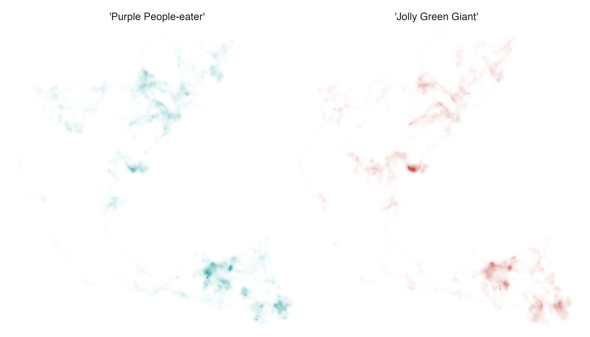
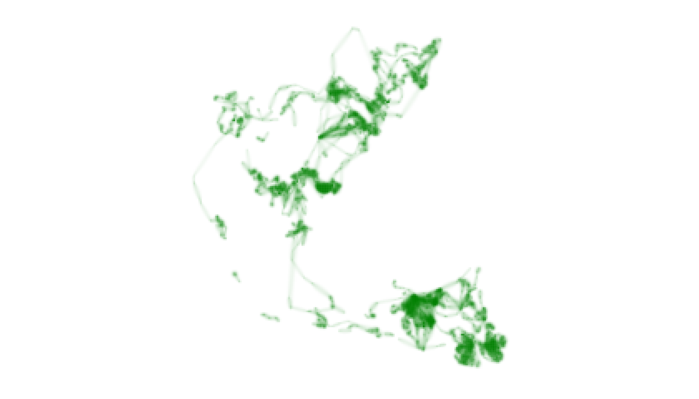
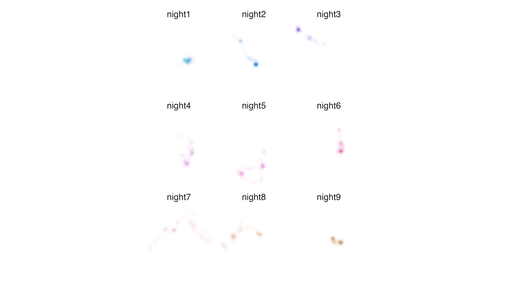
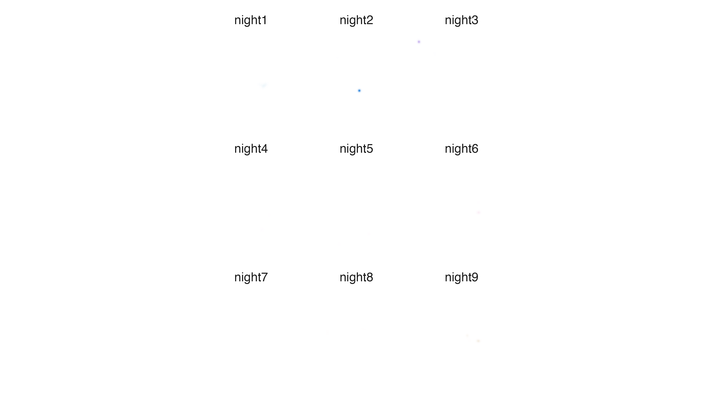
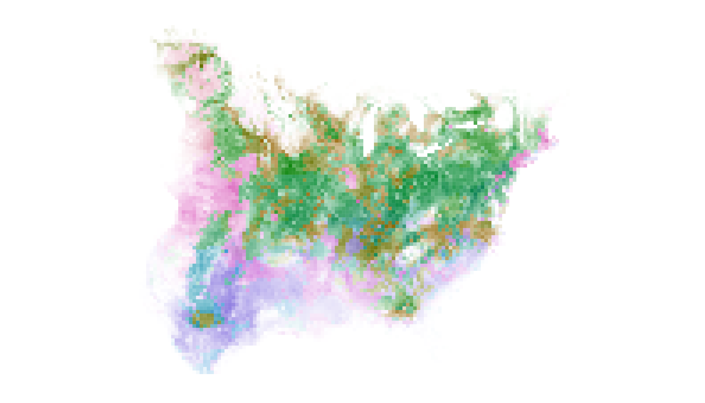

In the Introduction to colorist vignette we offered an overview of colorist functionality and several examples of how functions can be combined to map distributions. Here, we explore in more detail how metrics of spatiotemporal distributions (i.e., layer, intensity, and specificity information) are visualized using color attributes (i.e., hue, opacity, and chroma, respectively), and how users can modify visualizations to emphasize different narrative goals.
As a quick reminder, users provide colorist with a Rasterstack containing multiple layers of distributions. Layers may describe a temporal sequence of distributions for a single species or individual, or they may describe distributions of multiple species or individuals within a single time period. The functions in colorist were designed to visualize where, when, and how consistently species or individuals occur throughout a landscape but may be useful for visualizing multivariate data in a variety of other contexts.
In a typical workflow, users calculate metrics to describe their distributions and then choose a palette to enable visualization of those metrics. The palette and metrics are combined and visualized using a map function and a legend is generated to aid interpretation. The appearance of visualizations can be tuned by modifying the default settings of colorist functions at different points in the workflow.
1. Change how layers are represented by hues
The first type of adjustment we explore involves changing the assignment of hues to raster layers in palette functions.
Three palette functions are available in colorist, each created with a different visualization problem in mind. The palette_timecycle() function allows users to visualize cyclical sequences of distributions, palette_timeline() is geared toward linear sequences of distributions, and palette_set() is appropriate for unordered sets of distributions.
To ensure that viewers can make “fair“ visual comparisons of distributions through space and time, colorist functions impose rather strict constraints on how palette hues are assigned to layers, and how they are deployed in subsequent maps. There are opportunities for users to modify default settings, however, so that hues facilitate specific communication goals.
Below, we provide two hypothetical mapping problems that can be addressed by changing how hues are assigned to raster layers.
Map monthly distributions of a species in the southern hemisphere
The sample Field Sparrow data included with colorist describe monthly occurrence probabilities for a partially migratory bird in the eastern United States, but we are going to pretend that they describe monthly distributions of a species that occurs in temperate regions of the southern hemisphere. Our goal is to change the assignments of hues to months so that they better indicate the seasons experienced by our hypothetical species.
To begin, we calculate distribution metrics with metrics_pull() and adopt the default HCL-based color palette provided by palette_timecycle(). Then we visualize our monthly distribution data using the map_multiples() function.
library(colorist) library(ggplot2) library(RColorBrewer) # pull metrics, generate default palette, map layers m1 <- metrics_pull(fiespa_occ) p1 <- palette_timecycle(12) map_multiples(m1, p1, labels = names(fiespa_occ), ncol = 4)

The default settings for palette_timecycle() produce a palette of hues that begins at “blue” in January and moves progressively toward “green”, “yellow”, and “red”, before returning toward “blue”. These hues align with our general sense of seasonal progression in northern temperate regions, where we move from winter toward spring, summer, fall, and back to winter. The timing of the seasons does not make sense for a species that occurs in southern temperate regions, however.
We can change the alignment of hues and months in palette_timecycle(), while retaining the sequence of seasons, by adjusting the start_hue argument. All we have to do is specify a value of 60 rather than accept the default value of 240. This change tells palette_timecycle() to begin assigning hues to layers on the opposite side of the color wheel, 180 degrees, and six months away, from the default setting.
# change palette start position on color wheel p1_custom <- palette_timecycle(12, start_hue = 60) # map layers map_multiples(m1, p1_custom, labels = names(fiespa_occ), ncol = 4)
Now, the progression from “blue“ winter, to “green“ spring, to “yellow“ summer, and “red“ fall seasons begins in July rather than January and hues in the resulting maps more closely indicate the seasons experienced by our hypothetical southern temperate bird species.
Map space use by individual animals using relevant hues
When a Rasterstack contains distributions of multiple species or individuals, it is easy to imagine that users may want to override the default assignment of hues in order to reinforce some aspect of their identity.
Here, we turn to data describing utilization distributions for two African Elephants in Etosha National Park from 2011, individuals LA11 and LA14. Let us assume that they are better known as “Purple People-eater“ and “Jolly Green Giant“. We begin by calculating distribution metrics with metrics_pull() and then generate a palette using the default settings for palette_set(). When we combine our metrics and palette using map_multiples(), the two utilization distributions generate significant cognitive dissonance.
# pull metrics, generate default palette, map layers m2 <- metrics_pull(elephant_ud) p2 <- palette_set(2) map_multiples(m2, p2, labels = c("'Purple People-eater'", "'Jolly Green Giant'"), ncol = 2)

To communicate a coherent signal of identity across the labels and the maps, we need to override the default hue settings in palette_set(). We can achieve this by providing the custom_hues argument with a vector of integers indicating where on a rainbow color wheel the function should sample hues. “Purple” hues are found near 280 and “greens” are found near 120, so we specify those values in the appropriate order and visualize our adjustments.
# use custom_hues argument to make specific hue choices p2_custom <- palette_set(2, custom_hues = c(280, 120)) # map layers map_multiples(m2, p2_custom, labels = c("'Purple People-eater'", "'Jolly Green Giant'"), ncol = 2)
The result: cognitive harmony.
2. Change the relationship between intensity and opacity
The second type of adjustment we explore involves changing the relationship between intensity and opacity values, a modification that can be made in the map_single() and map_multiple() functions.
There are a variety of contexts in which it is difficult to visualize important information about populations or individuals because intensity values (i.e., relative abundance, occurrence, or probability density values) have unusual distributions. For example, it can be difficult to indicate the extent to which a species or individual uses an entire landscape when changing availability of resources or inconsistent social interaction causes an extremely skewed distribution of intensity values. Conversely, it can be a challenge to indicate areas of particular importance to species or individuals when they appear at first glance to use an entire landscape relatively evenly.
Cartographers have developed an array of strategies for modifying how data values are represented in maps, many of which involve binning or transforming data. While there is no right “answer” to the “problem” of visualizing data with an unusual distribution, colorist functions focus on transforming data using a slightly modified scales::modulus() transformation. This decision stems from one of our original goals for the colorist package: to visualize continuous variation in intensity values through space and time without truncating or binning values.
In colorist, the relationship between intensity and opacity values is controlled with a lambda_i argument in the map_multiples() and map_single() functions. The default setting of lambda_i = 0 prescribes a linear relationship between intensity and opacity values. Specifying negative values for lambda_i increases the opacity and apparent intensity of cells with moderate intensity values, giving them greater visual weight. Specifying positive values for lambda_i reduces the opacity and apparent intensity of cells with moderate intensity values, thus highlighting cells with high intensity values.
Cell opacity as a function of intensity values and lambda_i.
Below, we provide two examples of how users may modify the lambda_i argument to meet different narrative goals.
Emphasize the extent of the landscape used by an individual animal
If we continue our exploration of African Elephant data and inspect the utilization distribution for “Jolly Green Giant“ using the map_single() function, it is clear that the individual uses some areas of the landscape much more intensively than others.
# map one layer map_single(m2, p2_custom, layer = 2)

The map does not effectively visualize the system of trails used to move between areas of intensive use, however, which may be of specific management interest. In order to visually emphasize the full extent of the landscape used by “Jolly Green Giant”, we need to provide the lambda_i argument in map_single() with a negative number rather than accept the default value of 0. This change should increase the visual weight of cells containing moderate and low intensity values.
# map one layer with adjustment to lambda_i map_single(m2, p2_custom, layer = 2, lambda_i = -12)

After adjusting lambda_i, our map more clearly indicates the full extent of “Jolly Green Giant’s” movements throughout the year, albeit at a cost of distinguishing subtle differences in intensity of use between cells. It is important for users to recognize this trade-off and to make thoughtful decisions about how best to communicate their narrative goals while respecting the information embedded in their data.
Emphasize specific locations that are essential to an individual animal
Next, let us explore utilization distribution data for an individual Fisher that describes its use of the landscape over nine sequential nights in upstate New York. First, we use metrics_pull() to calculate distribution metrics. Then, we use palette_timeline() to generate a palette. Finally, we make a map using the map_multiples() function.
# pull metrics, generate default palette, map layers m3 <- metrics_pull(fisher_ud) p3 <- palette_timeline(fisher_ud) map_multiples(m3, p3, labels = names(fisher_ud))

It is clear that the Fisher is using different parts of its territory to different degrees, within and among nights, but if we want to more clearly understand and illustrate which areas were used most intensively we need to change the relationship between intensity and opacity values. In order to highlight intensively used cells, we provide the lambda_i argument in map_multiples() with a positive number rather than accept the default value of 0.
# map layers with adjustment to lambda_i map_multiples(m3, p3, labels = names(fisher_ud), lambda_i = 12)

At first glance, it may appear that we have made a mistake of some kind. Nearly all of the data seems to have disappeared. This is because our (extreme) adjustment to lambda_i has decreased the opacity and apparent intensity of cells containing intermediate and low intensity values and preserved opacity values only in the cells that were used very intensively. It makes for a very sparse series of maps, but we can now clearly see that two locations were used very intensively by the Fisher, one on the second night of the study period and one on the third night.
3. Change the relationship between specificity and chroma
The third type of adjustment we explore involves changing the relationship between specificity and chroma values, a modification that can be made in the map_single() function. In mechanical terms, the transformation is nearly identical to the one used for changing the relationship between intensity and opacity values. The visual and narrative impacts are quite different, however.
Remember that specificity values indicate whether a cell contains similar intensities (low specificity) or dissimilar intensities (high specificity) across raster layers and that variation in specificity values is indicated by varying the chroma of cell colors. Cells with low specificity values are indicated using low chroma values and appear “gray”. Cells with high specificity values are indicated using high chroma values and appear brightly colored.
Depending on the nature of the data contained in a Rasterstack, specificity values can take on a variety of meanings, including, seasonal use of a cell, ephemeral use of a cell, or differential use of a cell by multiple species or individuals. Thus, changing the relationship between specificity and chroma values can have important consequences for how viewers interpret patterns of spatiotemporal overlap among raster layers.
The relationship between specificity and chroma values is controlled with a lambda_s argument in the map_single() function. Again, the default setting of 0 prescribes a linear relationship between specificity and chroma values, analogous to the default relationship between intensity and opacity. Specifying negative values for lambda_s increases the chroma and apparent specificity values in cells with moderate specificity values, making them more “colorful“. Specifying positive values for lambda_s reduces the chroma and apparent specificity values of cells with moderate specificity values, making them more “gray“.
Cell chroma as a function of specificity values and lambda_s.
Below, we provide two examples of how users may modify the lambda_s argument to address different narrative goals.
Emphasize differences in how consistently locations are used by an individual animal
Using the sample Fisher data which contain utilization distributions for nine sequential nights, we can visualize patterns of spatiotemporal overlap by calculating distribution metrics using metrics_distill(), creating a palette using palette_set(), and generating a map with map_single(). To make rarely used areas more conspicuous we also set lambda_i = -5 in map_single() and then we create a legend to aid interpretation of our map using legend_timeline().
# distill metrics, visualize metrics in a single map, create legend m3_distill <- metrics_distill(fisher_ud) map_single(m3_distill, p3, lambda_i = -5)

legend_timeline(p3)

The abundance of brightly colored cells indicates that the Fisher used different parts of its territory almost every night, and the different hues indicate which night each cell was used most intensively. If we want to more clearly indicate which parts of the Fisher territory were used repeatedly, we need to adjust how specificity values are represented using the lambda_s argument in map_single(). To emphasize patterns of consistent use across nights we need to specify a positive number for lambda_s, an adjustment that decreases chroma and apparent specificity values in cells that contain moderate specificity values, making them appear more “gray“.
# visualize metrics in a single map with adjustment to lambda_s map_single(m3_distill, p3, lambda_i = -5, lambda_s = 12)
The revised map and the original map have very similar perceptual weights but, overall, the new map is less “colorful” as a result of supplying lambda_s with a positive number. By changing the relationship between specificity and chroma values, we now have a map that more clearly indicates which areas were used repeatedly by the Fisher across nights.
Emphasize timing of peak occurrence for a seasonal migrant
There are other situations in which researchers may want to emphasize when a species is most likely to be found in a particular place rather than emphasizing how consistently it is likely to be found in a particular place. For example, in the case of migratory birds, a researcher may want to communicate to birders the specific time of year they are most likely to find a given species in their backyard. We can address this challenge using our Field Sparrow data.
As with the Fisher, we start by calculating distribution metrics with metrics_distill() and then we generate a map by feeding metrics and the palette we created in the first example to the map_single() function. We also create a legend based on that palette using legend_timecycle() which helps us find Field Sparrows in space and time.
# distill metrics, visualize metrics in a single map, create legend m1_distill <- metrics_distill(fiespa_occ) map_single(m1_distill, p1)

legend_timecycle(p1)

Cells where populations of Field Sparrows persist at approximately the same level throughout the year have low specificity values and low chroma values and appear “gray“ in our map. Cells where populations occur only seasonally have high specificity values and high chroma values and appear “colorful“ with the hue in a cell indicating the month of peak occurrence.
If we want to emphasize information about when a species is most likely to be found (i.e., timing of peak occurrence) we can adjust the relationship between specificity and chroma values. We inflate the chroma and apparent specificity values for cells that contain moderate and low specificity values by providing the lambda_s argument with a negative number.
# visualize metrics in a single map with adjustment to lambda_s map_single(m1_distill, p1, lambda_s = -12)

The revised distribution map has approximately the same visual weight as the original, but our adjustment to lambda_s has made “gray” cells much more “colorful”. Now, information about timing of maximum occurrence is readily available to viewers and they should be able to identify in which month Field Sparrows are most likely to occur in their backyard and at what intensity.
Again, it is important for users to recognize that adjustments to lambda_s require a sacrifice of information about specificity. In the revised map, it is much more difficult for viewers to reliably assess how consistently Field Sparrows occur in a given cell throughout the year.